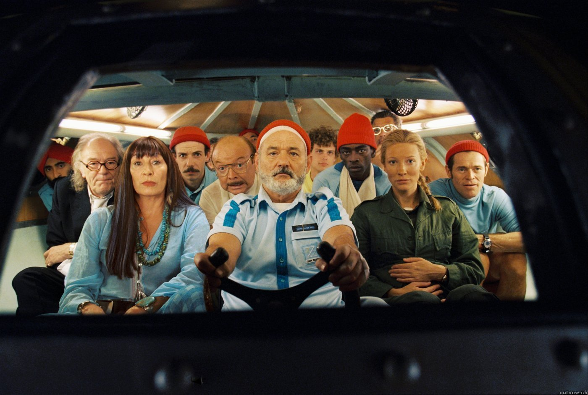

Blog Feed
Attention Lab Digest - Week of July 23
With our intrepid Rachels on a Southern California sojourn down to visit our friends at One World One Ocean and the Waitt Foundation, Upwell’s Team Interns pulled on their red beenies and stepped up to the helm.

Can you spot the interns?
Equally Evil Meets Socially Awesome, Again
Here at Upwell HQ we listen to and engage in online ocean conversations on a regular basis in order to amplify the best content and increase engagement. Since we happen to have some rather specialized tools at our disposal, we also jump in and do conversational analysis at times where we think we have something important to add.
A couple weeks ago we wanted to better understand the impact that the International Coral Reef Symposium (ICRS) had on the overall coral reef and ocean acidification conversations online. After doing a data dive, Aaron wrote a post, "Equally Evil = Socially Awesome," about differences in news media and social media coverage, as well as how the conference drove the biggest spikes in online mentions of coral and ocean acidification of 2012.
We recently updated the data to reflect the post-ICRS conversation -- including subsequent commentary collected by Andy Revkin over at Dot Earth (here and here). Worth paying attention to, particularly for ocean communicators, is how the original Op/Ed fares in comparison to the subsequent contextualization and debate.
Between July 13th and 20th, the "World Without Coral Reefs" Op/Ed received 1,384 online mentions. This is nearly exactly as many as Jane Lubchenco's "equally evil twin" quote received the week before (1,398), and a useful illustration of the "social liquidity" of emotional content. As is often the case online, controversy moved faster than context.
Thanks to Living Oceans Foundation for helping us share the ICRS data dive on twitter.
Self-identified or aspiring #datanerd? Suit up and swim deeper into Aaron’s world, here.
London Calling.. Tuna
After the Nature Conservancy posted a slideshow of Olympic athletes versus awesome animals we got in touch and then created a Michael Phelps vs Bluefin Tuna infographic. We pitched it to a few science-y and fun pages on Facebook like “I f*****g love science.” The impressive reach and engaged fan base of those facebook sites make them a great ally for sharing and finding slippery visual content.
“Give a Sh*t about Nature” posted the image to their Facebook and received 38 “likes”, 12 shares, 4 comments, and 13,186 impressions. “Give a Sh*t about Oceans” posted the image to their Facebook and received 3 “likes” and 1 comment. “Boycott Bluefin Tuna” posted it and received 10 “likes” and 2 shares, one of which had 4 more likes and one more share.
On twitter, our Phelps tweets got 8 retweets thanks to tweeps like David Shiffman, SeafoodWatch, Ken Peterson, Twilight Greenaway and others. Your twitterings garnered a collective 28,644 impressions!
Pop-up Shark Video
To continue our promotion of Kool Kid Kreyola’s awesome shark rap, we helped annotate the YouTube version of the video with some of the comments from RapGenius. We then shared the new video on Twitter. So far, the video has 245 views and 19 likes. Share it with your friends!
Other Tide Report Stuff
Is it Really All Over for Coral Reefs?
Our friends over at Seamonster Blog, specifically our besty of the week, Clare Fieseler, put together a great video clip of Jeremy Jackson’s rebuttal of ‘zombie ecology’ and his words of genuine hope for coral reefs. We watched the initial version of the video, and offered some suggestions to Clare on how to make it even more captivating, including music. Clare worked into the late hours to make edits so we could feature it in Thursday’s Tide Report.
The video is short, punchy, and a terrific example of how multimedia can be used to connect with an audience beyond an original audience.
The video and blog post were tweeted over 15 times, including by our friends Scripps Institute of Oceanography and the Ocean Portal at Smithsonian, with over 25,000 impressions. People are still talking about it.
The video is “evergreen,” meaning it’s good to share any day, so keep on sharin’ on.
Manta Rays
In our Thursday Tide Report we featured a story in the Guardian UK about the mass murder of manta rays for Chinese “medicinal” purposes. We asked our readers to tweet about it, and several of our readers, including Miriam Goldstein and Jen Savage, helped spread the word.
Miriam’s tweet was retweeted 18 times, including by Ed Yong, who has more than 20,000 followers. In total, the tweet had over 34,000 impressions. Thanks Miriam, for spreading the word!
Pitch Time
Upwell has been pitching more media and blogs recently, what with the success of last week’s Guardian story on Kool Kid Kreyola and the social liquidity of the coral reef conversation on the New York Times. This week, we pitched some writers on a few stories we thought could use additional attention.
We pitched Julia Whitty of Mother Jones, Peter Hanlon of Ecocentric and bunch of coffee blogs about the “Caffeine in our Ocean” story coming out of the Pacific Northwest. No luck so far, but we’ll continue to keep an eye out.
We also reached out to Andrew Sullivan at the Daily Beast after he featured two shark stories in his blog, to try to bring his attention to additional ocean content. We sent the Kool Kid Kreyola video and offered to continue to feed them awesome ocean-y content. We’re now in touch with the editor of the Daily Dish and look forward to building a relationship. The Daily Dish has over a million unique visitors a month!
We found this short and easy to understand “guide to the sustainable seafood guides” on EcoCentric. We sent it over to Ask Umbra at Grist and Maria Finn (a freelance journalist who covers sustainable seafood for USA Today, Sunset, and other outlets). So far, no response, but even a single win with one of these efforts will help elevate and simplify the issue of sustainable seafood with a large audience.
In shark art news, we continued our outreach around PangeaSeed’s Great West Coast Migration Tour this week, reaching out to San Francisco blogs and event websites to get them to promote the San Francisco event, happening this weekend. So far, the event has been featured in missionmission, sfist, funcheap, brokeass tuart, and more.
Looking ahead, we also started to brainstorm activities for Shark Week. We’ll be kicking off with a conference call with our shark friends to share strategies and ideas to make shark conservation issues go big this year. We’re working hard to pull together metrics about the shark conversation from times past so that we’ll have a good idea of what the baseline is.
Unpacking Social Mentions of Mission Aquarius
Mission Aquarius has taken its bow, after several aquanauts spent a week from July 14th to 21st underwater at the Aquarius Reef Base off the Florida Keys. The project received plenty of major mainstream media attention, from NPR to the Washington Post to Fox News and even The Daily Show with Jon Stewart.
But how did it fare in online social mentions?
Upwell tracks social mentions because they're a concrete action. Creating a blog post, retweeting or posting a video is a bigger deal than just viewing content. We track ocean content makers. These makers drive the online conversation," says Rachel Weidinger.
Note that our tracking of social mentions is different from the more common metric of tracking impressions, like views on YouTube videos. We count social content as it is posted online, tracking posts with keyword searches. This social mention metric has more in common with the metric of media hits than it does with the metric of impressions.
To kick things off, here's a graph that shows overall online social mentions of Mission Aquarius from June 1-July 26:

Social mentions of the Mission Aquarius keyword set June 1-July 26, 2012 developed by Upwell
The grand total: 12,559 social mentions of Mission Aquarius. That's 12,559 times an individual took the time to create online content specifically mentioning Mission Aquarius.
Now, let's break that down a little.
Two Influencers Created Half the Attention
Many people and news outlets were speaking about Mission Aquarius. But online, the bulk of these social mentions were the result of just two sources: @ReefBase, the official Mission Aquarius twitter account (4,375 mentions since July 1st), and ocean tech journalist (and former Gizmodo Editor) Brian Lam (2,514 mentions since July 1st). This graph shows the contributions of these two sources to the overall spike:

Social mentions of the Mission Aquarius keyword set by Mission Aquarius (blue line), ReefBase (purple line), Brian Lam’s posts (orange line) June 1-July 26, 2012 developed by Upwell
Total social mentions for Upwell’s keyword groups for Mission Aquarius (blue line): 12,559; ReefBase (purple line): 4,375; Brian Lam’s total posts (orange line): 2,514.
The Wave Crests
As the close of the Aquarius base drew nearer, social mentions steadily increased. The largest wave of social mentions began to rise on July 8th (with tweets from @ReefBase, @SylviaEarle, @blam, @1World1Ocean, @MissionBlue and others) and crested on July 17th (with a story on NPR’s “Morning Edition”). Here’s a graph that breaks out (or “unpacks”) a selection of the contributors to that wave:

Social mentions of the Mission Aquarius keyword set by main influencer July 8-July 26, 2012
What this graph shows is the contributions of a number of different sources. We can see that @Reefbase and Brian Lam's Gizmodo posts scored a high number of social mentions, as did One World One Ocean and BoingBoing. Among traditional outlets, NPR and the Associated Press had notable spikes. In particular, there is one big spike on July 17. But how does that spike compare to overall social mentions? Let's take a look.
Continuing Engagement Beats Short Spikes

Social mentions of the Mission Aquarius keyword set for ReefBase (magenta) and NPR's Morning Edition (green) June 8-July 26, 2012 developed by Upwell
That spike came as a result of an item on NPR's "Morning Edition" - which generated 897 online mentions,the most of any single event. Note, however, that the spike is just that: a spike. It doesn't last, not even a little bit. In contrast, @ReefBase mentions continued steadily throughout the month, with an overall total of almost 3,500 more than NPR. Why? Because @ReefBase engaged with their audience throughout the month, building an audience -- and a conversation. Conversations are engines of attention: add content and engagement and they generate social mentions, often at a far more steady state that news media stories, which tend to spike quickly and then vanish, with little trace and even less impact on the ongoing baseline of social mentions.
So What Have we Learned?
1. Online mentions come from online sources: Of the 12,559 mentions of Mission Aquarius we measured, more than HALF of those were directly attributable to two savvy sources only: Brian Lam, and @ReefBase. The nearest traditional media source was NPR, which had fewer than 1,000 social mentions. It may seem obvious, but the way to drive online conversation is through online sources, rather than traditional media.
2. Putting the effort into one or two major online sources pays off: Mission Aquarius made the effort to invite Brian Lam to be involved closely with the project for a lengthy period, and it paid off. It's an important lesson for ocean communications professionals: Whenever possible, find a blogger or writer at a major online source, particularly if that blogger is predisposed to ocean issues, and sell them on your story, as early as possible.
3. Keep the conversation going: By maintaining a lengthy conversation in the build-up to and during Mission Aquarius, Reef Base showed that engagement beats spikes, even big spikes from major media outlets - and beats them by a significant degree. It is further evidence that it isn't enough any more to simply issue press releases or post links. For a sustained online 'bulge', we have to engage readers and others in an ongoing conversation.
Equally Evil = Socially Awesome: Unpacking The ICRS 2012 Spike
Update: A Look At The Ensuing Conversation
On July 13th, the New York Times posted an Op/Ed by Roger Bradbury, an ecologist at the Australian National University. Entitled "A World Without Coral Reefs", Bradbury advanced the view that a total collapse of coral reefs was all but certain, and proposed that we should reallocate funding to account for this reality. In his words:
They have become zombie ecosystems, neither dead nor truly alive in any functional sense, and on a trajectory to collapse within a human generation. [...] But by persisting in the false belief that coral reefs have a future, we grossly misallocate the funds needed to cope with the fallout from their collapse. Money isn’t spent to study what to do after the reefs are gone — on what sort of ecosystems will replace coral reefs and what opportunities there will be to nudge these into providing people with food and other useful ecosystem products and services.
With its alarming title and controversial assertions Bradbury's editorial immediately received a burst of mentions online. The New York Times doesn't enable commenting on its Op/Ed posts, so the discussion of this post took place largely in social media, as you can see below:

Several noted science and conservation journalists were quick to respond, including The New York Times' Andy Revkin ("Reefs in the Anthropocene – Zombie Ecology?" and "More on Coral Reefs and Resilience or Ruination"), Melissa Gaskill ("When Coral Reefs Recover"), and Carl Safina ("Life Finds a Way -- But Needs Our Help"). These posts each received their share of online attention, though none approached the number of mentions of the Bradbury post.
However, since these responses were made as comment-enabled blog posts, a good portion of the resulting engagement took place in the comments. This was especially true for Andy Revkin's two posts, which have (as of July 24th, 2012) received 79 and 43 comments respectively. This is likely attributable, at least in part, to Mr. Revkin's active use of social media sites such as Twitter, where he has over 37,000 followers.
To better place the post-ICRS conversation in context, here's what it looked like relative to ICRS itself, and the accompanying bump in online mentions for both coral reefs and ocean acidification that ICRS generated:

Between July 13th and 20th, the "World Without Coral Reefs" Op/Ed received 1,384 mentions. This is nearly exactly as many as Jane Lubchenco's "equally evil twin" quote received the week before (1,398), and a useful illustration of the "social liquidity" of emotional content. As is often the case, controversy moves faster than context, even online.
[Update concludes here. What follows is the original ICRS unpacking post.]
ICRS - The Big Picture
The 12th International Coral Reef Symposium took place earlier this month. Coral reefs and ocean acidification were two of very first ocean conversations that we began monitoring here at Upwell, so we were understandably interested to see what impact, if any, ICRS would have on these topics.
What we found was both encouraging and informative, and we’d like to share it with you.

ICRS was responsible for the single largest spike in online mentions of both ocean acidification and coral reefs in 2012 (thus far). For example, ocean acidification typically receives between 200-300 posts per day. But on July 9th, the first day of ICRS 2012, ocean acidification was mentioned nearly 3,000 times.
The impact of such large bumps in attention can not be overstated, especially for a topic like ocean acidification, which has yet to firmly establish itself as part of the mainstream dialog. (At least not in the way that say, climate change has.) By boosting their profile beyond small, core groups of scientists and activists, these conversations can reach the new audiences that are crucial for raising the ongoing baseline. That ICRS was able to generate such a marked increase in both the coral reef and OA conversations is a laudable accomplishment, and a promising sign for the future.
Unpacking The Spike

What generated this burst of attention? By far, the bulk of the online attention surrounding ICRS 2012 was the result of a single event: NOAA Undersecretary of Commerce for Oceans and Atmosphere Jane Lubchenco’s plenary address, and the resulting Associated Press article, “Science official: Ocean acidity major reef threat”. This story was quickly picked up by many other news outlets, including USA Today and the Huffington Post, and was widely tweeted about and shared online.
Equally Evil = Socially Awesome
The popularity of this article also illustrates the power of succinct, impactful messaging. In her address, Lubchenco vividly described ocean acidification as “climate change’s equally evil twin”.
Effectively bridging the gap between science and emotion, such statements are ideal for social media, where the decision to share content is made in seconds, driven as much (or more) by the heart than by the head. We can see this effect particularly well in the following comparison.
The first graph shows online mentions of both Jane Lubchenco (orange line) and her “equally evil twin” quote (blue line) from news media outlets only. During ICRS, Lubchenco received 144 mentions in news media online. In comparison, her quotation was mentioned only 98 times.

Turning to social media however, this relationship becomes completely inverted. During the week of ICRS, the “equally evil twin” quote received 1,298 mentions in social media, while Jane Lubcheno was mentioned by name only 394 times.

This is a vivid reminder of people’s inclination to care more about the sentiment of a quote than the accuracy of its source. At least when it comes to their initial decision to share content online.

Certainly attribution and context are important, but online, where such deeper knowledge is only a click away, the more easily people can communicate the heart of a story—the essence of why this is important and you should care about it—the more likely that story is to be shared. By intentionally providing them with such handles you drastically increase the likelihood that your content will receive the widest possible attention.
Don’t be shallow. Don’t resort to exaggeration or baseless hyperbole. And certainly don’t lie. Rather, simply remember that the river of online news is endlessly asking people to understand, to care, and to act. (Even if that ask is “merely” a share, or a Facebook like.) The easier and faster you can make that process, the more liquid your content becomes. Encapsulating a difficult issue like ocean acidification as effectively as Jane Lubchenco did at ICRS is an excellent example of doing this right.
Me and My Shark Fin, Shark Art, Mission Aquarius and more: Attention Lab Wrap for the week of July 16
Ok, ok, we know it's not shark week YET (shark week starts August 12). But there was just too much shark goodness this week, so our big attention campaigns focused on the misunderstood apex predators. There was also a big bump in attention to coral reefs and their prospects for the future, spurred by an op-ed in the New York Times. Between ailing coral reefs and sharks, we had quite an exciting week.
Kool Kid Kreyola: Where Sharks Meet Rap
The big thing on our plate this week was making this video popular. We loved it so much we featured it in our Tide Report, twice. Why'd we choose this? This is precisely the type of content we believe can amplify attention to the ocean, particularly among new audiences. Ocean content is abundant, but the edgy stuff from new voices is a bit rare. Kool Kid Kreyola is a San Francisco-based painter/rapper who is so impassioned about sharks that he is using his artistic powers to spread the word about shark finning.
We began by transcribing the lyrics in rapgenius, a website that serves as the Wikipedia for rap lyrics. We asked some of our shark scientist friends to contribute their perspective to the lyrics. We'd like to send a big Upwell shout out to David Shiffman and Chuck Bangley for droppin' some real ocean science.
We had been in conversation with a freelance writer, Christine Ottery, about another project. But when she got wind of this project, she asked us for more information, and then ended up writing an amazing blog post in the Guardian, which helped the message go farther. Many organizations that may have been hesitant to share the (somewhat NSFW) video were excited to share the article. The Guardian has a global traffic rank of 183 on Alexa (meaning it's the 183rd most popular website on the net - The New York Times is 108th, for reference). While it's UK based, the readership is global, so this was a BFD.
Results
So far, the Guardian article has gotten over 170 mentions on twitter, and "Me and My Shark Fin" has over 400 mentions. A Google Blogs search for "Me and My Shark Fin" turns up about 2700 results, and a news search returns 114 results. These are astounding results, and we are happy to be able to say we were able to make this happen.

Play counts and top referral sources for 'Me and My Shark Fin' on Vimeo.com
#MMSF (as Kreyola likes to tweet it) has jumped from 640 plays to over 3600 in the time since we started promoting it (initially through the incomparable fuckyeahsharks.tumblr.com, which we liberated through a gift of pizza). Of the top referral sources for the video (as posted on Vimeo), we and our Tide Report subscribers directly influenced seven of the top nine (displayed above). The other two sources (Facebook and Google) were likely significantly influenced but its difficult to uncover attribution. All in all, congrats, you!
Thank you to our Tide Report readers and other members of the ocean conservation community who shared it with your audiences. Thank you to Nico Dinan (OceanMinds), Mark Rovner, NRDC, The Ocean Project, Pew Environment, Ayana Eliza, David Shiffman, Earth Island Institute, Kevin Zelnio, Miriam Goldstein, and John Bruno for tweeting about Kool Kid. Thank you to BlooSee for including it in your newsletter! Special thanks to Ocean Conservancy's theblogaquatic, and Hilary Gridley, for giving us an excuse to watch that Tupac hologram again.
The West Coast Migration Tour: Where Sharks Meet Art
We learned about this awesome art and film tour of West Coast cities through Kool Kid Kreyola's video. The tour, brought to us by PangeaSeed and the Beneath the Waves Film Festival, had just the right recipe for bringing ocean conservation issues to a new audience, so we reached out to our friends Tre Packard (of PangeaSeed) and Austin Gallagher (of the Beneath the Waves Film Festival) to see how we could help the message spread. Here's a snapshot of what we did:
- We advised them both on how to use social media to make their artwork go farther.
- We created a Pinterest board of all the shark art featured in the art tour (to help the work spread beyond the west coast). We felt Pinterest was the best tool for this, because the art is beautiful (and thus apt to spread quickly on Pinterest) and, with information about the tour included in each pin, could help drive traffic to the tour.
- When missionmission (a local blog here in SF) had a blog post featuring a mysterious new San Francisco shark mural, we let the drama develop and then closed the loop by providing Migration information.
- The Upwell interns researched blogs and social media accounts that share events in each of the cities the tour is stopping in. They looked for those with local spirit, a love of the arts, music, nonprofit events and even foodies (who would be on the no shark fin soup bandwagon). We reached out to people in Portland to promote the event happening there this weekend and began outreach for the San Francisco event.
Results
We are queuing up big online success of the whole tour, and are helping PangeaSeed build a hip West Coast base that is active online for their ongoing outreach around shark and ocean conservation. Over 90 people RSVP'd for the Portland event, and we're just building up steam! We believe that every attendee has the potential to help the shark conservation message spread online. There have been about 200 mentions of the art tour on Twitter, and we are planning some additional promotional work next week, with the aim of beating that.
A Debate Over the Future of Coral Reefs
In Tuesday's Tide Report we summarized the conversation happening around coral reefs in the New York Times. We suggested tweets of powerful quotes from each of the different reactions. Those suggested tweets weren't used by any of our readers. Perhaps we jumped into the conversation a bit too late? Many of our readers were already engaged in the conversation.
Following up on the coral conversation sparked by Roger Bradbury’s op-ed, we created a Storify board to keep track of the strongest voices sounding on the matter. The growth of the coral debate is important to lay out in this way, since how problems afflicting our oceans are packaged and presented frames how people will think about the future of our oceans and what is possible to be done. With the flurry of tweets and retweets, blog posts and articles, Storify has been a great tool to help us clearly outline what is being said and by whom on the future of coral reefs.
One highlight of our work to amplify the conversation was engaging with Andy Revkin on Twitter. It's always a little heart-fluttering when "big-time journalist" responds to or retweets your tweet, and @revkin did it three times - to his 37,386 followers! He updated his blog post several times this week, in part due to us showing him that the conversation was continuing.
What Else We Were Up To This Week
The whale shark sucking fish out of a net video that we shared in last Monday's newsletter is still getting shared and featured in blog posts widely. Upwell helped the video spread to BoingBoing, among other websites.
We were so happy to have two ocean-y friends visit our office this week! A good pal of Upwell’s, Kate Wing from the Moore Foundation, finally got to meet the whole Upwell team on Wednesday. Working side by side with us, she inspired not only our work ethics but also our bellies, bringing us some delicious treats to fuel us through the afternoon work stretch.
Crystal Sanders, a big mover in the sustainable seafood movement, also dropped by to brainstorm social media tactics to amplify Dine Out For Wild Salmon, a one-day SalmonAID event coming up next month.
By The Numbers: Which Ocean Acidification Hashtag Is The Most Popular?
Last week’s High Tide Alert highlighted the spike in online mentions of ocean acidification following NOAA chief Jane Lubchenco’s characterization of it as “osteoporosis of the sea” and “climate change’s equally evil twin.” Just for good measure, we even compared it to online mentions of the Kardashians, a subject we expanded on in our blog.
But we were curious about something. Just how are people communicating about the subject. On Twitter, the words “ocean acidification” and the hashtag #oceanacidification use up a lot of characters, leaving little room to say much about it other than “is really bad and I’m against it.” Does that work against it, and are people finding other ways to talk about it online?


- #oceanacidification (568 tweets - 45.2%)
- #ocean (324 tweets - 25.8%)
- #acidification (228 tweets - 18.2%)
- #ocean #acidification (136 tweets - 10.8%)